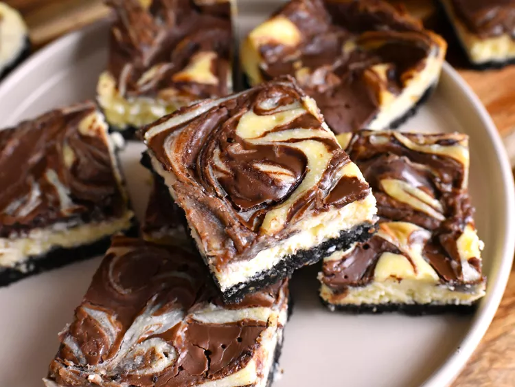

Back to home
Odin Recipes
Nutella Swirl Cheesecake Bars

For these Nutella swirl cheesecake bars, a rich Nutella-swirled cheesecake filling
sits atop an OREO and hazelnut-studded crust for a truly delectable dessert.
Make sure to give the bars at least 4 hours in the fridge before serving.
Ingredients
Crust
- 1 1/2 cups finely ground chocolate creme filled sandwich cookie crumbs (such as OREO®), from about 19 cookies
- 1/3 cup chopped dry-roasted hazelnuts
- 2 tablespoons firmly packed light brown sugar
- 1 pinch salt
- 4 tablespoons unsalted butter, melted
Filling
- 16 ounces full-fat cream cheese, softened
- 1/2 cup white sugar
- 2 teaspoons vanilla extract
- 1/4 teaspoon salt
- 1 pinch ground nutmeg
- 3/4 cup heavy cream, at room temperature
- 1 1/2 teaspoons lemon juice
- 1 extra large egg, at room temperature
- 1/2 cup chocolate hazelnut spread (such as Nutella®)
Preparation
- Preheat the oven to 350 degrees F (180 degrees C). Line a 9x9-inch square pan with enough parchment paper to have overhang on all sides.
- Combine OREO crumbs, chopped hazelnuts, brown sugar, and pinch of salt in a food processor; pulse until finely ground. Add in melted butter
and pulse until mixture is evenly moistened. Pour mixture into the prepared pan and press firmly and evenly into the bottom of the pan.
- Bake crust in the preheated oven for 10 minutes. Remove from oven and allow crust to cool for 10 minutes. Keep the oven on.
- Beat cream cheese, white sugar, vanilla, 1/2 teaspoon salt, and nutmeg together in a large bowl with an electric mixer until completely
smooth and combined. Add in heavy cream and lemon juice and beat until smooth and combined. Add in egg and mix until just incorporated.
Pour batter over crust and spread into an even layer.
- Place Nutella in a small microwave-safe bowl and microwave until slightly warmed, about 30 seconds. Place dollops of warm Nutella randomly
over cheesecake filling. Use a sharp knife to gently swirl the batters together, taking care not to go too deep and cut the crust. Tap the
pan on the counter a few times to help the batter to settle again.
- Bake bars in the preheated oven until edges of bars begin to turn golden, and bars still have a slight jiggle in the center, 35 to 40 minutes.
Allow bars to cool to room temperature; then refrigerate until fully chilled, at least 4 hours. Cut into 16 bars.
Back to home